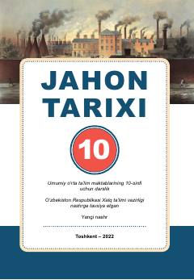

JT10-sinf o‘quvchilari uchun mo‘ljallangan jahon tarixi fanidan darslik.
Ushbu darslik umumiy o‘rta ta’lim maktablarining 10-sinf o‘quvchilari uchun mo‘ljallangan bo‘lib, XIX asr oxiri va XX asr boshlaridagi jahon tarixini qamrab oladi. Kitobda industrial sivilizatsiyaning shakllanishi, jahon urushlari va eng yangi davr tarixining asosiy bosqichlari tahlil qilinadi.